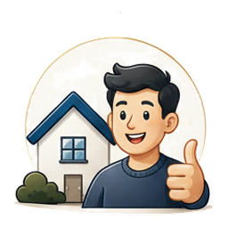
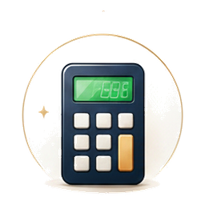
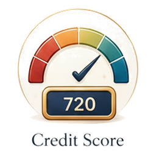
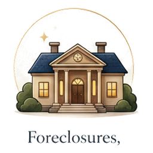
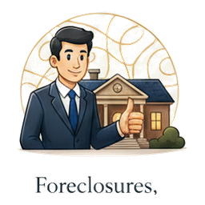

Every home scored 0–100 in plain English — green means a real deal, with fire & flood risk and the true monthly cost made obvious.
No more clicking around or doing the math in spreadsheets. Tap any point in the constellation to see what it does for you.
The ring turns on its own — tap a node to pause and explore.
We pull government foreclosure & bank-owned feeds (HUD & USDA) plus under-priced listings nationwide, then score every one 0–100 in plain English — with fire & flood risk and the true monthly cost built in.
Type your ZIP — see the under-priced homes near you.
Deal Scores and cost estimates are automated screening tools — not appraisals or financial advice. Verify with a licensed lender, agent and inspector before buying.
Every home, one 0–100 number. Green = a good deal.
FEMA risk flagged before you fall in love.
Mortgage + tax + insurance + upkeep + HOA, all-in.
Down payment + closing — the money to get the keys.
The numbers that decide a home — each in plain English, each at a glance.

Your income, cash & debts → green, amber or red.
Insurance surprises, flagged early.
Every cost added up, not just the loan.
The real money you need up front.
One 0–100 number. Green = a good deal.

Rental & flip math, no signup.

What your score means for your rate & payment.

Bank-owned deals across the USA.

When you’re ready, reach the listing agent.
Four plain-English calculators. No signup, no math homework. FREE
Income, cash and debts → green, amber or red.
FREEDown payment + closing, the real number.
FREEWhich one really wins for you, and when.
FREEHow fast a little extra clears the loan.
FREEFounding members lock in $19.99/mo for a full year — rising to $49.99/mo soon. No spam, just your invite.
We email you when your city opens. Unsubscribe anytime.